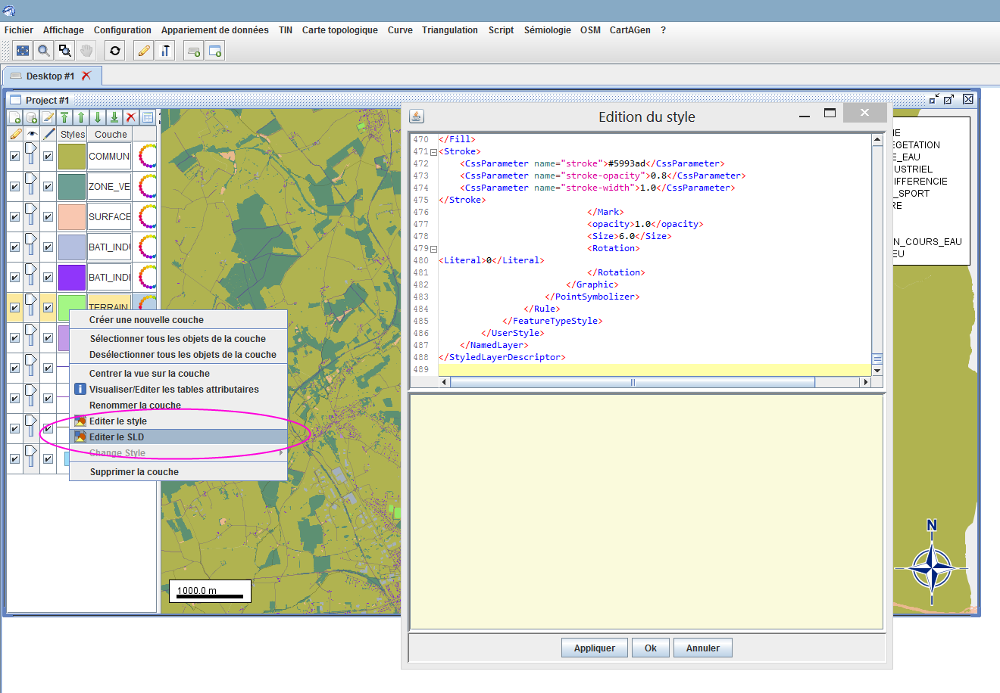

Prise en main de l’interface graphique 2D
Chargement d’un jeu de données géographiques shape
Il existe 2 méthodes pour charger des fichiers shapes dans l’interface :
En sélectionnant les fichiers sur votre système
Fichier >> Ouvrir un fichier
Une fenêtre s’ouvre, sélectionnez des fichiers sur votre système. Par exemple vous pouvez prendre les fichiers fournis dans le dépôt GeOxygene-data (jeu de données).

Figure 1 : Ouvrir une couche de données (format Shapefile)
En les pré-chargeant au démarrage du lancement de l’interface.
Modifier le fichier geoxygene-configuration.xml à la racine du repertoire d’installation de GeOxygene et ajouter sous les plugins :
<preload>D:\ign-echantillon\bdtopo\72_BDTOPO_shp\BDT_2-0_SHP_LAMB93_X062-ED111\H_ADMINISTRATIF\COMMUNE.SHP</preload> <preload>D:\ign-echantillon\bdtopo\72_BDTOPO_shp\BDT_2-0_SHP_LAMB93_X062-ED111\F_VEGETATION\ZONE_VEGETATION.SHP</preload> <preload>D:\ign-echantillon\bdtopo\72_BDTOPO_shp\BDT_2-0_SHP_LAMB93_X062-ED111\D_HYDROGRAPHIE\SURFACE_EAU.SHP</preload> <preload>D:\ign-echantillon\bdtopo\72_BDTOPO_shp\BDT_2-0_SHP_LAMB93_X062-ED111\E_BATI\BATI_INDUSTRIEL.SHP</preload> <preload>D:\ign-echantillon\bdtopo\72_BDTOPO_shp\BDT_2-0_SHP_LAMB93_X062-ED111\E_BATI\BATI_INDIFFERENCIE.SHP</preload> <preload>D:\ign-echantillon\bdtopo\72_BDTOPO_shp\BDT_2-0_SHP_LAMB93_X062-ED111\E_BATI\TERRAIN_SPORT.SHP</preload> <preload>D:\ign-echantillon\bdtopo\72_BDTOPO_shp\BDT_2-0_SHP_LAMB93_X062-ED111\E_BATI\CIMETIERE.SHP</preload> <preload>D:\ign-echantillon\bdtopo\72_BDTOPO_shp\BDT_2-0_SHP_LAMB93_X062-ED111\A_RESEAU_ROUTIER\ROUTE.SHP</preload> <preload>D:\ign-echantillon\bdtopo\72_BDTOPO_shp\BDT_2-0_SHP_LAMB93_X062-ED111\A_RESEAU_ROUTIER\CHEMIN.SHP</preload> <preload>D:\ign-echantillon\bdtopo\72_BDTOPO_shp\BDT_2-0_SHP_LAMB93_X062-ED111\D_HYDROGRAPHIE\TRONCON_COURS_EAU.SHP</preload> <preload>D:\ign-echantillon\bdtopo\72_BDTOPO_shp\BDT_2-0_SHP_LAMB93_X062-ED111\H_ADMINISTRATIF\CHEF_LIEU.SHP</preload>
où D:\ign-echantillon est le répertoire où vous avez téléchargé les fichiers (jeu de données).
Les couches s’affichent dans l’ordre de leur sélection.
{kind=link}
Figure 2 : Interface de GeOxygene
Gestionnaire de couches
Le bloc à gauche de l’interface cartographique fournit un gestionnaire de couches (Cf. Figure ci-dessous) :

Figure 3 : Gestionnaire de couches - LayerLegendPanel
On sélectionne une couche en cliquant dessus, on peut ensuite modifier différentes propriétés de cette couche :
- la rendre sélectionnable (= pouvoir sélectionner les objets dans l’interface carto ou dans la table attributaire),
- modifiable (=éditer, modifier les objets),
- gérer son niveau de transparence,
- modifier son style et son nom.
Les flèches flèches en haut de ce bloc permettent d’ordonner correctement les couches, afin qu’elles soient visibles.
Pour visualiser les données attributaires d’une couche, on clique sur la l’icone table (dernière à droite du bloc). On accède à l’ensemble des couches et à leurs tables attributaires :

Figure 4 : Tables attributaires - AttributeTable
Il est possible d’éditer les attributs (si la couche correspondante est rendue modifiable), on peut sélectionner un objet et faire zoomer dessus, ou faire afficher uniquement des objets sélectionnés.
Style
Une fois les couches chargées et superposées dans le bon ordre pour être visualisées,
Panel de style
On peut modifier leur symbolisation par défaut : il suffit de cliquer sur le carré de la colonne Styles devant le nom de la couche à représenter. Le premier onglet concerne la symbologie de la couche; un deuxième onglet permet de gérer l’affichage des toponymes.
Figure 5 : Modifier le style de la couche Commune (onglet symbologie et toponymes) - StyleEditionFrame
Fichier SLD
On peut modifier le style directement par un fichier SLD (dans le menu ou 3ème icone dans le bloc LayerLegendPanel
Pour le jeu de données échantillon BD TOPO® IGN vous pouvez essayer le style suivant :

Figure 6 : Style très basique IGN dans l’interface GeOxygene 2D
Editeur SLD
Pour les connaisseurs du langage SLD, on peut modifier directement le style dans un éditeur :
Figure 7 : Editeur SLD
{kind=link}
{kind=link}
{kind=link}
Le style peut être sauvegardé en cliquant dans le menu Exporter SLD
Sauvegarde
On peut sauver la visualisation sous la forme d’une image PNG :

Figure 8 : Image de la carte sauvegardée
Chargement d’un jeu de données OSM
A venir, sinon le guide du développeur est accessible ici